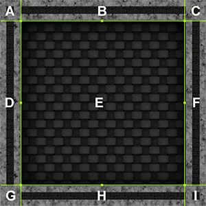
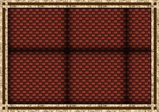
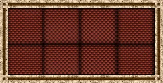
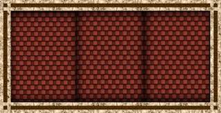

Divide a sprite into nine sections so Unity can stretch or repeat the different sections, and add a collision shape.
Follow these steps:
Select the sprite texture in the Project window.
In the Inspector window, set Mesh Type to Full Rect, then select Apply.
If you set Mesh Type to Tight instead, 9-slicing might not work correctly, because of the way Unity generates and renders the sprite.
Select Open Sprite Editor.
Select the sprite you want to 9-slice.
Click and drag the green handles inward to define the borders of the sprite, for example the walls of a floor tile. Or enter the values in the Sprite overlay, using the L, R, T, and B fields for left, right, top, and bottom.

The borders define the nine areas of the sprite: the central area (E), the four walls (B, D, F, and H), and the four corners (A, C, G, and I).
Select Apply.
Drag the sprite asset from the Project window to the Scene view as normal.
In the Inspector window for the sprite, in the Sprite Renderer component, set Draw Mode to Sliced or Tiled depending on the behavior you want. For more information, refer to 9-slicing modes.
Note: Setting Draw Mode to Sliced or Tiled means the Sprite Renderer component controls the Collider 2D component. As a result, you can’t edit the Collider 2D component manually.
When you resize this sprite, the sections behave as follows:
If you set Draw Mode to Sliced, Unity uses simple scaling if you resize the sprite using the Transform component of the GameObject or the transform tool in the Scene view.
If you set Draw Mode to Tiled, use the Tile Mode property to control how Unity repeats, or tiles, the texture. The options are:
A value of 1 for Stretch Value means the sprite repeats when the sprite is twice its original size. A lower value means the sprite repeats less often.



To add a collision shape to a 9-sliced sprite, follow these steps:
Select the sprite in the Hierarchy window.
In the Inspector window, select Add Component.
Select either a Box Collider 2D or Polygon Collider 2D component.
Other types of Collider 2D component don’t support 9-slicing.
Enable Auto Tiling. Unity now automatically updates the collider shape when the dimensions of the sprite change.
Unity can add additional edges to the collider shape when you enable Auto Tiling. This can have an effect on collisions.